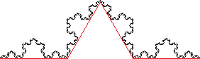

| Now add three points between the original endpoints, obtaining four line segments, each of length 1/3. |
| The collection of these segments has length L1 = 4/3. |
| We see the length of the Koch curve is greater than 4/3. |
|  |
| Here is the third approximation. |
Return to Ineffective Ways to Measure.